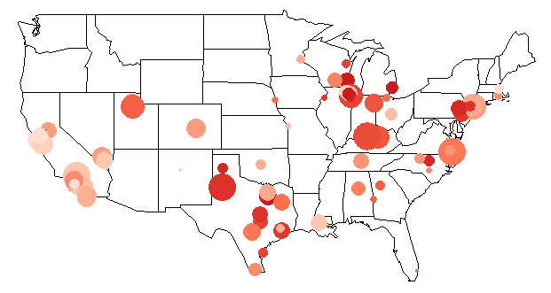

Course Projects
Three seperate projects are done with regards to functional data. Which focus on the fitting data with basis functions, cross validation, see project 1. Dimension reduction through functional PCA and dynamic fPCA, see project 2. Scalar-on-function and function-on-function regression, Gaussian process, see project 3.
coefficient estimation with confidence interval (left) and error-covariance matrix (right) for functional ANOVA model in project 3.
The final project of CDA (categorical data analysis) targeted mainly at model fitting (logit-based model, probit and bayesian model), estimation, intpretation of coefficients and goodness of fit. Problems are solved under different grouped data through R language. See final final project.
 |
Predicted probability of believes in heaven (left), and probability distribution for each category (right).
The final project for social network analysis focuses on calculating and intepreting network-based measures, community detection and visualization for Github users. It also contains a simulation step for random graph, small-world and BA model. In addition, manipulation of data through SQL server to Python and R language is shown. For more details, please refer to the final project.
Louvain algorithm (left) and fast greedy algorithm (right) modes for community detection.
This final project focuses on the disease prevalence and control dataset, carried out principal component analysis, factor analysis and cluster analysis. Multidimensional scaling are also carried out to study the similarities between each group. For more please refer to final project.
|  |
Radar plot of disease prevalence for four representative area (left), disease prevalence of obesity (middle), clustering result (right).
Course Presentations
With my teammate, for the final project I complete the review of basic concepts and nonnormal approximation for unbounded exchangeable pairs mainly based on Shao and Zhang, 2019 . For more details, refer to final presentation.
The presentation is a group work, I completed the part from computational approach of Square-root Lasso (convex and non convex, Bunea et al., 2011, Shen et al., 2016) to other aspects of Square-root Lasso (grouped square root lasso). For more details refer to final presentation.
For final presentation I completed a review on tricks for Econometrics under big data paradigm from the work of Hal and Varian, 2014. It discussed problems of algorithms (overfitting, multicollinearity), classification, longitudinal data analysis and modeling uncertainty, see final presentation.
Undergraduate Thesis
The background of this work comes from historical record of pandas from China Conservation and Research Center for the Giant Panda , where I had a volunteer experience at.
Photos taken during volunteering activity
My graduate thesis focus on behavioral research of the giant panda through statistical analysis. For studying the similarity and common behavior patterns among individuals, the research carried out time series analysis, hypothesis testing, factor analysis, clustering and time series clustering, with evident behavioral patents fond among pandas related to tense and oestrus behavior, appropriate intepretations are made and compared. For the final presentation click here.
 |
Left: spectral clustering result is similar to multidimensional scaling (MDS) in grouping pandas. Right: Time series clustering result of rest behavior using GAK distance, two prototypes are fond. One type have stable rest over the year, the other have more during winter.